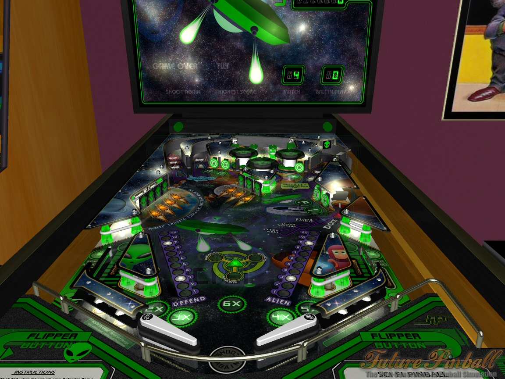
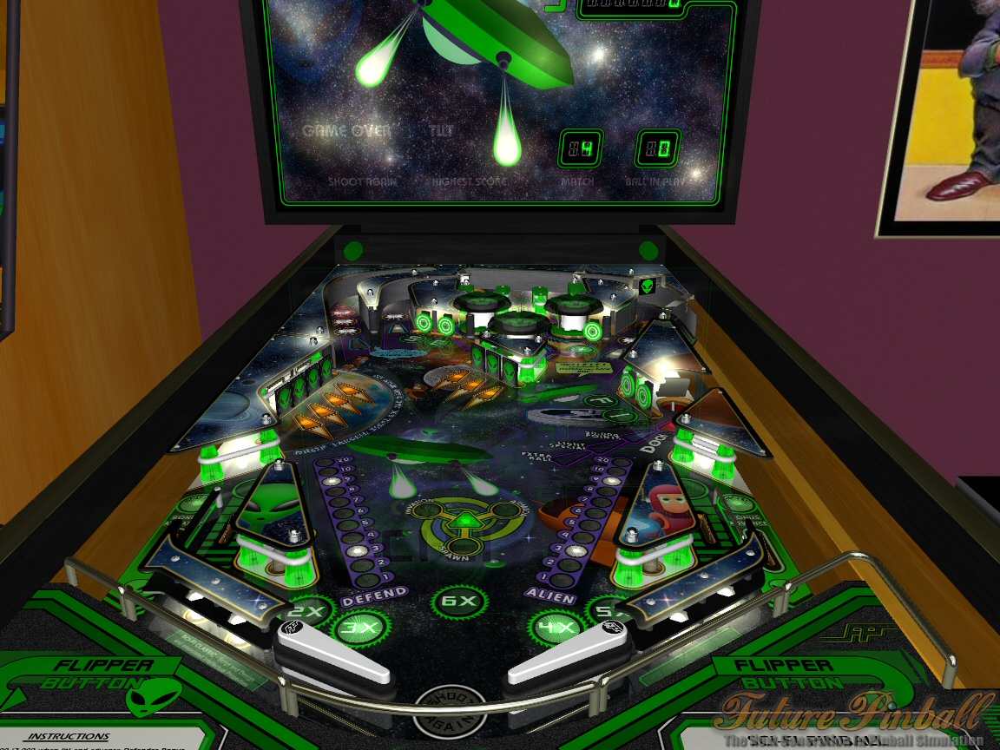
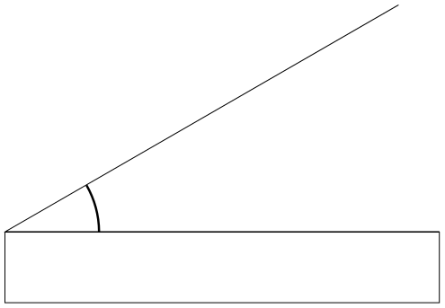
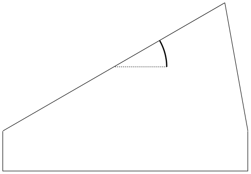
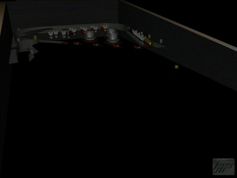

Introdução à Computação Gráfica
Marcel Jackowski
mjack@ime.usp.br
EP #2: It's pinball time!

Objetivos
- Sistema de Partículas
- Física Clássica (Newtoniana)
- Colisões Inelásticas
- Animação (quadro a quadro)
- Transformações Geométricas
- Movimentação da Bola
- Movimentação das Paletas (flippers)
- Uso de composição e texturas
- Iluminação
Elementos
- Mesa
- Ângulo de Inclinação
- Obstáculos
- Lançador de bolinhas
- Paletas (Flippers)
- Teclado (um para cada)
- Espaço suficiente para cair uma bolinha no meio
- Bolinha
- Rolando perpendicularmente ao sentido do movimento
- Textura para mostrar o rolamento
- Bater em um obstáculo => Aparecer + 3 bolinhas
- Desativar enquanto tiver mais de uma bolinha
Exemplo de Mesa
 

Física
- Força da gravidade
- Força inicial do lançamento da bola
- Força resultante da colisão com obstáculos
- Paredes: Somente restituição (ex: perde 20%)
- Obstáculos: X% de perda em cada tipo.
- Paletas
- Velocidade Angular => Vetor Força
Interface Gráfica
|
|
Inclinação da mesa
|
 
|
|
Especificações
- Câmera em posição e orientação adequadas
- Skybox (céu ou sala ou ...)
- Entregar compactado via Paca (com seus nomes)
- Avaliação usando a versão do Paca
- Entrega: 08 de Junho de 2014
- Demonstração: 11 de Junho de 2014
- Colocar nas vossas páginas pessoais
- Descrição de como usar mostrada na página
- Não usar bibliotecas gráficas (Three.js, GLGE, )
- Não usar bibliotecas de física
- Usar (se desejável) apenas bibliotecas de tratamento e carregamento de texto, matrizes e quaternions.
Bônus - Sombras
- Aplique sombras
- Sobre a mesa
- Sobre outros objetos (opcional)
- Hard/Soft Shadow
Bônus - Áudio
- Sons em eventos
- Colisões com obstáculos
- Lançadores
- Perder a bolinha
- Outros (Pontos alcançados, música de fundo...)
FuturePinball
- Inspiração
- Link

Avaliação
| # | Descrição | Pontuação |
| 01 | Mesa e obstáculos exibidos corretamente | 05 |
| 02 | Paletas, bolinhas, e lançador exibidos corretamente | 05 |
| 03 | Paletas se movimentam corretamente | 03 |
| 04 | Paletas impulsionam a esfera corretamente | 03 |
Avaliação
| # | Descrição | Pontuação |
| 05 | Obstáculos funcionando corretamente | 08 |
| 06 | Ao perder a esfera, uma chance é gasta e o jogo é recomeçado | 03 |
| 07 | Ao perder 3 chances, o jogo termina. | 03 |
| 08 | Pontuação funcionando corretamente | 05 |
| 09 | Interface correta | 08 |
| 10 | Iluminação correta (alterando tons de textura e cores) | 05 |
| 11 | Iluminação atualizada pelos controles da interface | 04 |
Avaliação
| # | Descrição | Pontuação |
| 12 | Skybox feito corretamente | 05 |
| 13 | Lançador funcionando corretamente | 05 |
| 14 | Esfera se movimenta na velocidade e aceleração corretas | 05 |
| 15 | Esfera se rola corretamente | 04 |
Avaliação
| # | Descrição | Pontuação |
| 16 | Dinâmica do jogo funcionando efetivamente | 05 |
| 17 | Várias bolinhas funcionam corretamente (sist. de partículas > 8fps) | 05 |
| 18 | Inclinação correta (teclado e física) | 05 |
| 19 | Botões pausar/continuar e reiniciar funcionando corretamente | 04 |
| 20 | Projeto compactado, entregue e demonstração feita satisfatoriamente | 10 |
Avaliação
| # | Descrição | Pontuação |
| 21 | Bônus – sombras feitas corretamente | 50 |
| 22 | Bônus – áudio funcionando corretamente | 50 |